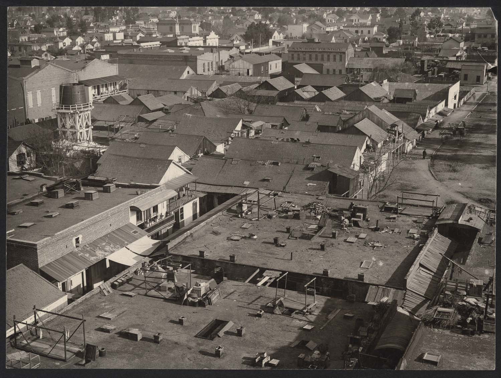
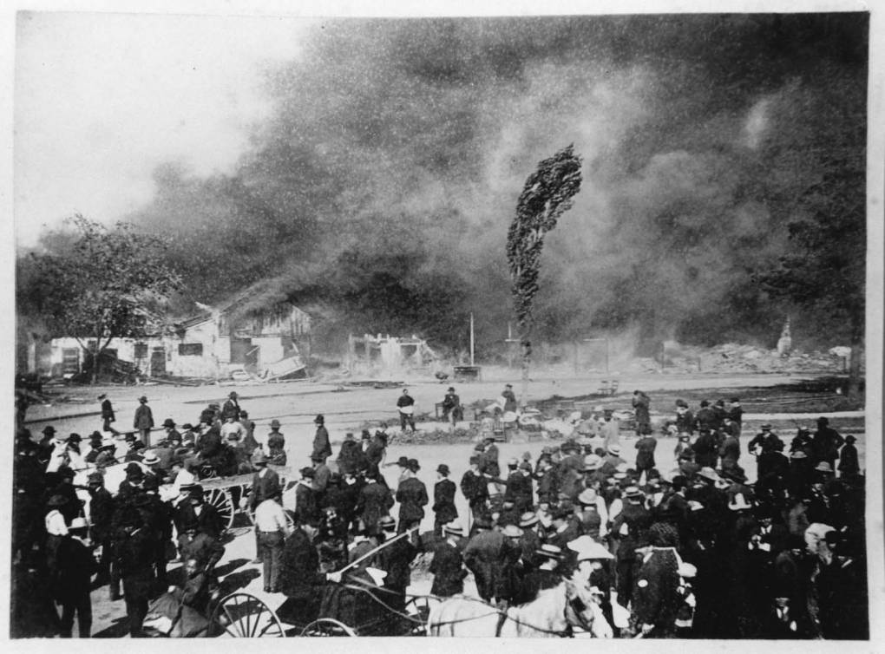
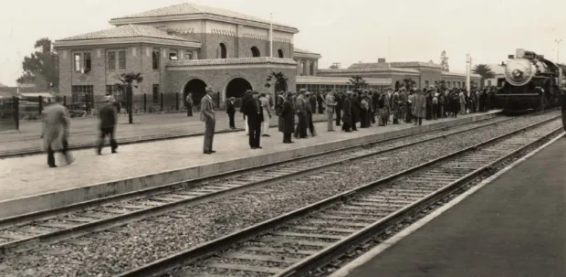

Stop 8 of 8 — Final Stop
Diridon Station
You've reached the end of the tour.
Historic Photos



Thank you for exploring with us
Help Preserve San Jose's Architectural Heritage
PAC*SJ has advocated for the preservation of San Jose's historic buildings and neighborhoods since 1980. Your membership makes this work possible — join us in protecting the places that make downtown San Jose irreplaceable.
Join PAC*SJ →